A talk for programmers that skips the double-slit experiment entirely and builds a quantum computer out of vectors, matrices, and a state machine on the unit circle — then runs the simplest algorithm that beats classical computation.
Watch on YouTubeThis is quantum computing aimed at computer scientists. No double-slit experiment, no uncertainty principle — just a computation model that turns out to be a state machine, one quantum algorithm that outruns its classical equivalent, and a working program in Q#, Microsoft's quantum language.
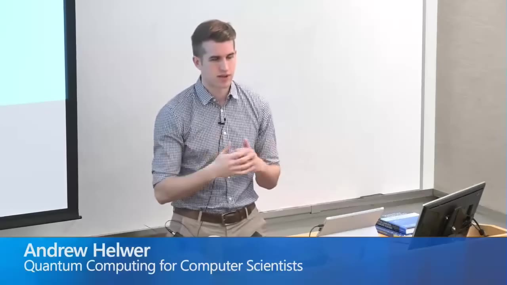
There are concrete reasons to bother. Quantum supremacy — a real problem running faster on a real quantum computer than on a classical one — was expected within the year. Shor's algorithm can factor RSA and undermine the global financial system. Grover's gives a square-root speedup on unordered search. And simulating quantum-mechanical systems for drug design may be the application that actually changes the world.
Our informal language developed in a very classical world. It is simply not equipped to deal with the quantum world. We need to learn a new language, which is the language of mathematics — all metaphors and analogies will lead you astray.— Andrew Helwer
A classical bit is a two-element vector: 0 is (1,0), 1 is (0,1) — also written in Dirac notation as |0⟩ and |1⟩. Think of it as an array indexed from zero, with a single 1 marking the value. Every operation on a bit is a matrix multiplied against that vector.
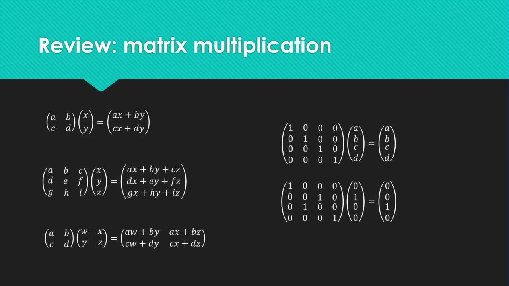
There are exactly four functions on one bit: identity, negation, constant-0, and constant-1. Each is a matrix. Identity is the identity matrix; negation flips the two entries. Remember these four — the whole later algorithm hinges on them.
An operation is reversible if knowing the output and the operation always tells you the input. Operations that permute bits are reversible; operations that erase and overwrite are not. Identity and negation are reversible; constant-0 and constant-1 erase information and are not.
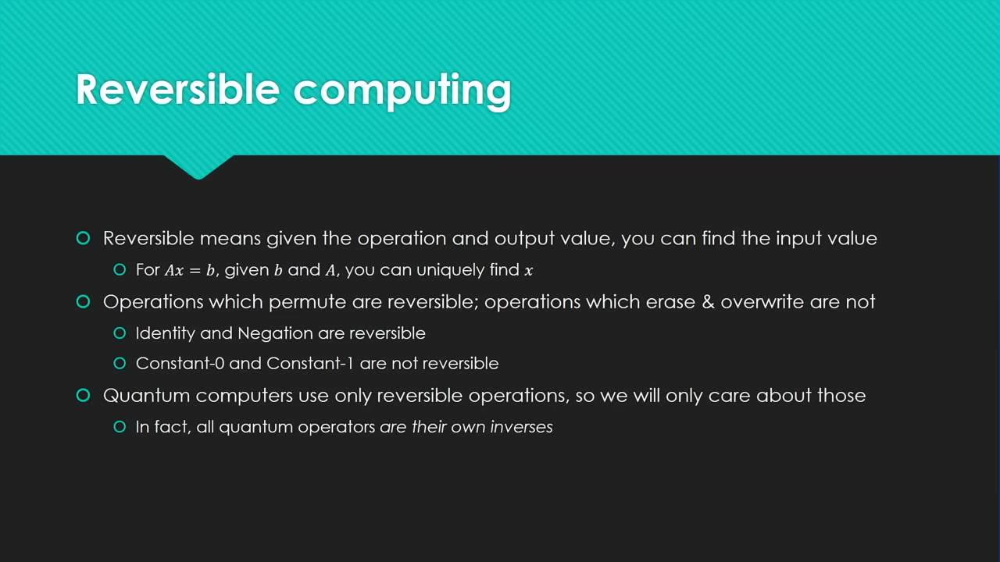
Two bits combine by their tensor product: tile the second vector once for each element of the first, then multiply through. Two classical bits become a four-element vector with a single 1 marking which of |00⟩, |01⟩, |10⟩, |11⟩ you have.
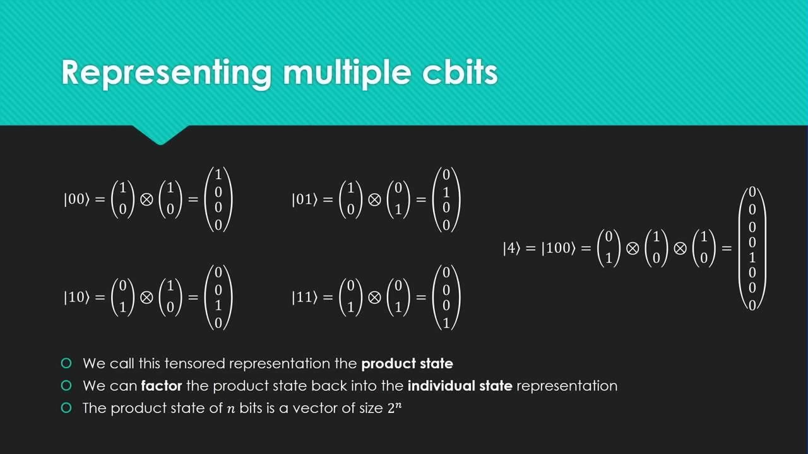
That 2ⁿ is the first whisper of where quantum power comes from — and the reason simulating a quantum computer classically costs exponential memory. Hold the thought.
CNOT — conditional NOT — operates on a pair of bits. One is the control, one is the target. If the control is 1, flip the target; if it's 0, leave it alone. The control is always left unchanged. As a 4×4 matrix it's the identity with its bottom two rows swapped.
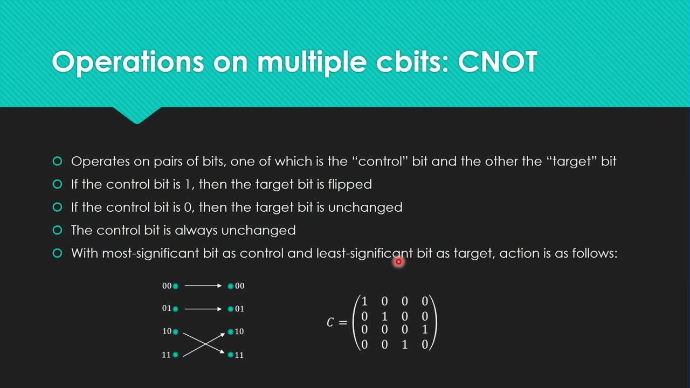
CNOT is to reversible computing what NAND is to classical CPUs — the basic block you stack into larger logic. It isn't quite universal on its own (that needs a Toffoli gate), but it's the workhorse.
A qubit is a two-element vector (a, b) where a and b are complex numbers and a² + b² = 1. The classical bits (1,0) and (0,1) already satisfy that — they were special cases of qubits the whole time. (We'll stick to real numbers here.)
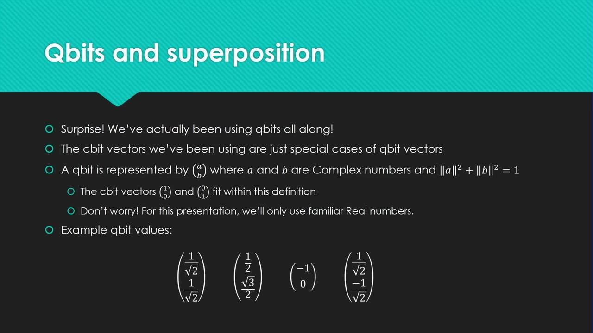
A qubit can hold a value that is neither 0 nor 1 but both at once — superposition. Measuring it collapses it: a qubit (a, b) lands on 0 with probability a² and 1 with probability b². The coin-flip state is 50/50.
A subtle point: (1/√2, 1/√2) and (1/√2, −1/√2) both collapse 50/50, so classically they're identical. But the sign is preserved inside the quantum realm, and it changes later computations. They are different states.
The Hadamard gate takes a 0 or 1 qubit into exactly equal superposition. Its matrix is 1/√2 in every entry except a negative in the bottom-right corner. That negative isn't decoration — without it both 0 and 1 would map to the same state and the gate wouldn't be reversible.
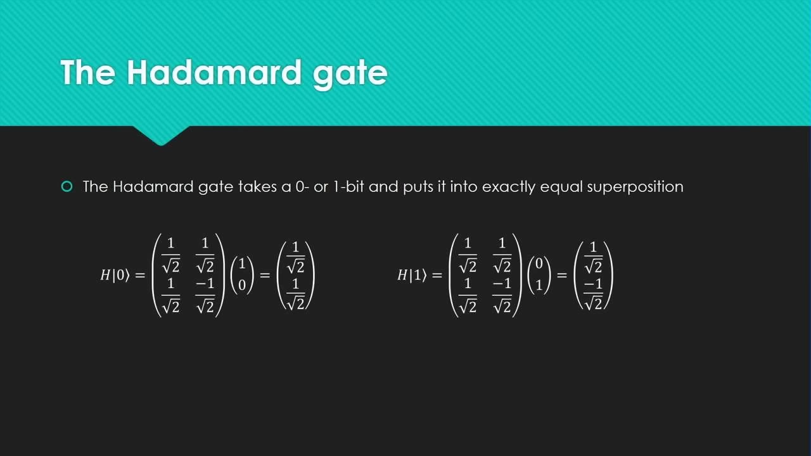
Because Hadamard is its own inverse, applying it again pulls a coin-flip state back out to a clean 0 or 1. That suggests a structure for quantum algorithms: start classical, Hadamard into superposition, do quantum work, and — if you're clever — Hadamard back out so the whole computation comes out deterministic.
With real amplitudes, every qubit lives on the unit circle: |0⟩ on the x-axis, |1⟩ on the y-axis, the superposition states in between. The bit-flip (X) and Hadamard (H) gates are just transitions around that circle. With complex numbers it becomes a sphere — the Bloch sphere — but the circle is enough here.
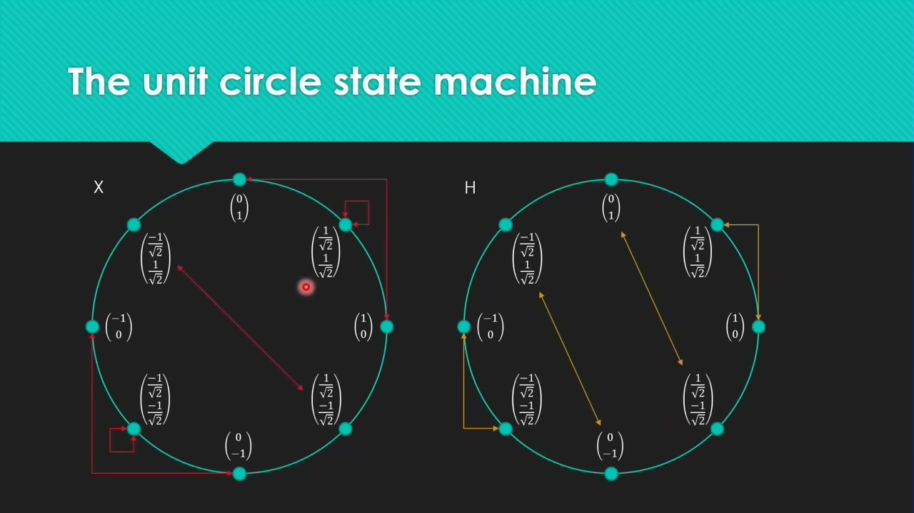
Someone hands you a black box holding one of the four one-bit functions. You don't get to look inside. Telling exactly which function it is takes two queries classically and two quantumly — a single collapsed bit can't distinguish four functions. But asking only whether the function is constant (constant-0, constant-1) or variable (identity, negation) takes two queries classically and one on a quantum computer.
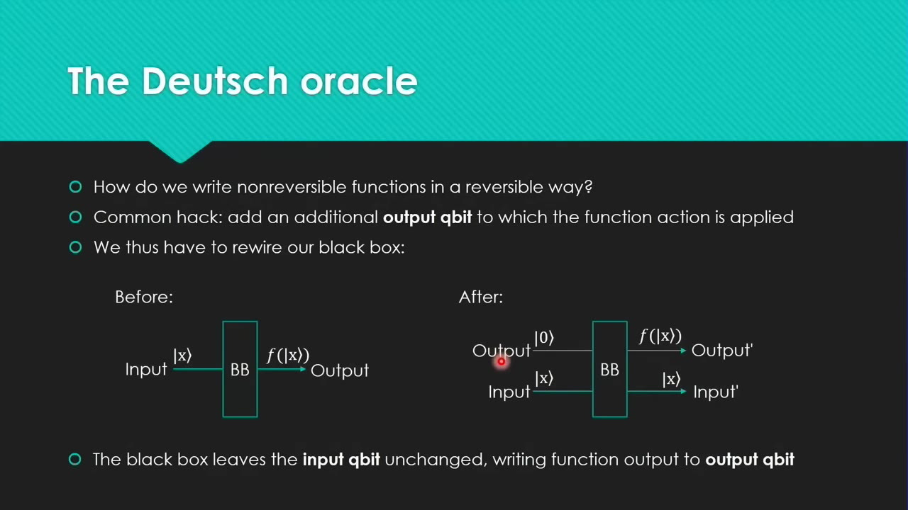
The constant functions aren't reversible, so they can't be a quantum gate directly. The fix — used constantly in quantum computation — is to rewire the box with separate input and output qubits. Constant-0 becomes blank wires; constant-1 is a single bit-flip; identity is a CNOT; negation is a CNOT followed by a bit-flip.
I swear, this is the most difficult part conceptually of this entire presentation. If you get this, you're golden.— Andrew Helwer
The algorithm breaks the box's assumption that its output qubit starts at zero. Initialize both qubits to 0, bit-flip them to 1, Hadamard both into superposition, send them into the black box, Hadamard again, and measure.
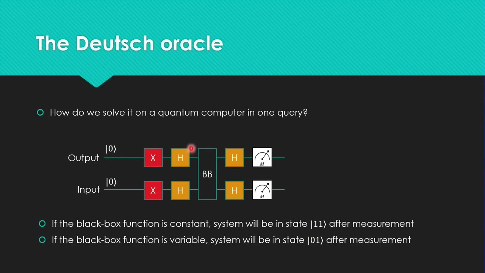
Walk all four functions through the unit circle and it checks out: constant-0 and constant-1 both land on |11⟩, identity and negation both land on |01⟩. Four for four. One query tells you the category, undeniably beating the classical two.
The intuition: the difference within each category is a single negation gate, and a negation gate barely moves a superposed qubit — so its effect gets neutralized. The difference between categories is whether there's a CNOT, and that effect gets magnified.
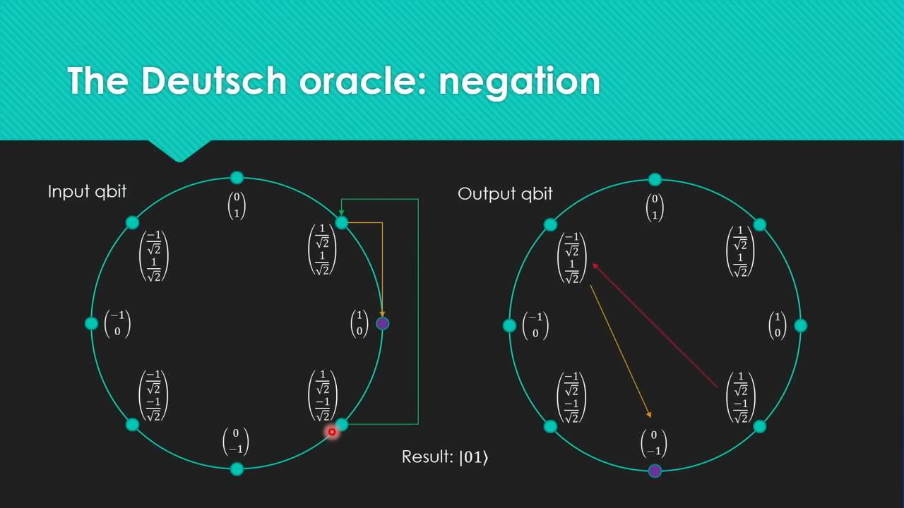
That's a real lever of quantum computing: you can change what a gate effectively does by choosing the superposed state you put it in. The Deutsch oracle is contrived, but the generalized Deutsch–Jozsa version takes n bits and still answers in a single query — an exponential speedup over trying all 2ⁿ inputs. Simon's periodicity problem built on it, and Shor's algorithm built on that. That's when the field caught fire.
Sometimes a two-qubit product state can't be factored into two individual qubit states. Try to factor (1/√2, 0, 0, 1/√2) and the equations have no solution. The qubits have no separate values — they only make sense together. They're entangled, and to build that state you just Hadamard one qubit, then use it as the control in a CNOT.
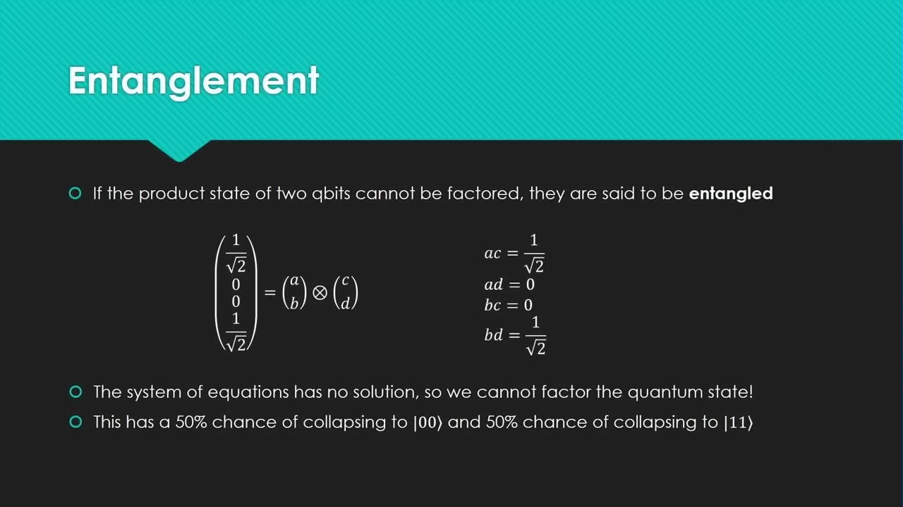
Measure one entangled qubit and it instantly collapses the other, across any distance — China entangled qubits between Earth and a satellite. This is faster than light, and it bothered Einstein enough to call it "spooky action at a distance." The catch: you get faster-than-light coordination, not communication. No information crosses, so causality survives.
The EPR paradox was originally designed to discredit quantum mechanics. It turned out to be the actual way the universe works. I think it's a great little story.— Andrew Helwer
Teleportation moves an arbitrary qubit state somewhere else using an entangled pair as a bridge. You can cut-and-paste a qubit but never copy it — that's the no-cloning theorem, which falls straight out of operations having to be reversible and their own inverse.
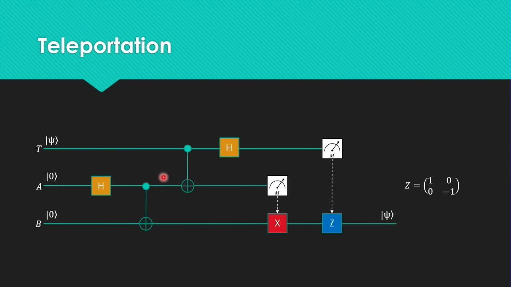
Despite riding on faster-than-light entanglement, teleportation isn't faster-than-light communication: Alice must also send Bob two classical bits. Pre-entangle a stockpile of EPR halves, ship them by mail, and Alice can teleport qubits to Bob one pair at a time — each pair a single-use, non-renewable resource.
The first demo runs the Deutsch oracle in Q#, Microsoft's F#-based quantum language. IsBlackBoxConstant allocates two qubits, runs exactly the protocol from the slides, and returns whether the box is constant. On the simulator: constant-0 and constant-1 return true, identity and negation return false.
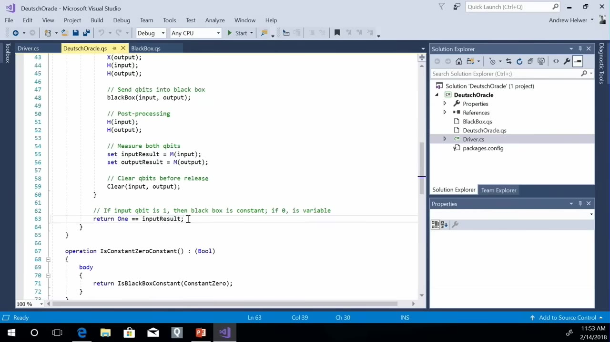
IsBlackBoxConstant in Q# — allocate, preprocess with bit-flips and Hadamards, send into the black box, Hadamard, measure.01:19:30The second demo entangles two qubits live on the IBM Quantum Experience — a real five-qubit machine you drive in a browser by dragging gates. Drop a Hadamard, a CNOT, and two measurement gates, and run it.
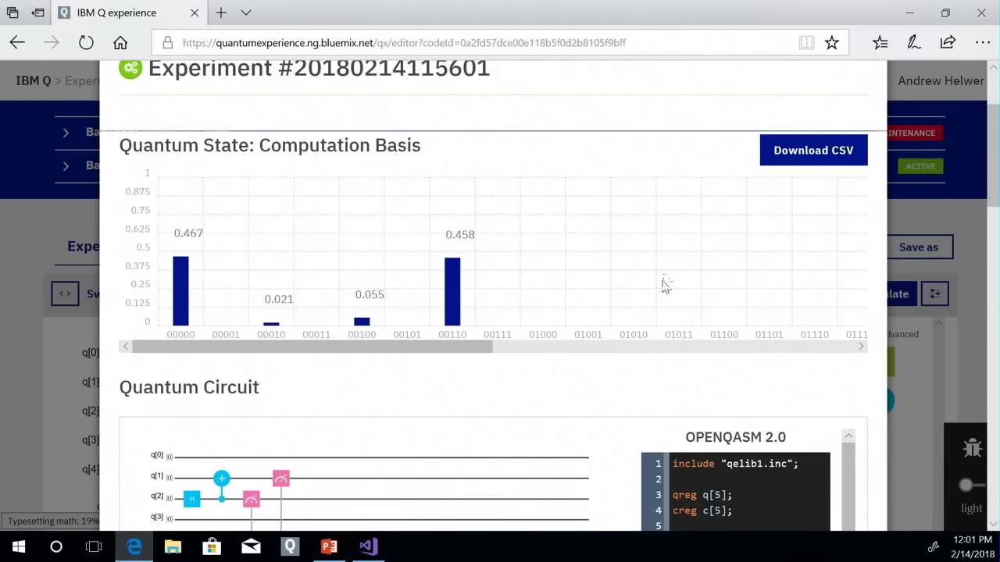
This isn't mad genius science. This is very accessible science.— Andrew Helwer